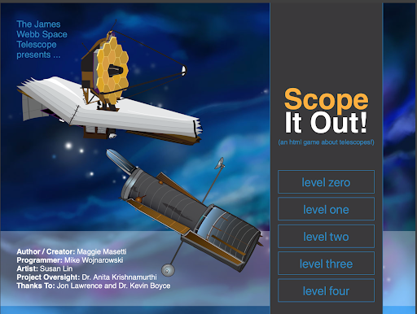
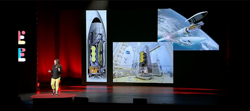

"Scope it Out!" - An Educational Game on the JWST
As a space enthusiast, I was excited to try out "Scope it Out!", a NASA-made game that teaches players about the James Webb Space Telescope and its mission. The game provides an immersive and educational experience by allowing players to use the telescope to observe different objects in space.
One of the most impressive features of the James Webb Space Telescope is its giant mirror, which captures high-quality images of galaxies far away. The game does an excellent job of teaching players how to use this and other tools to explore the universe. For example, the telescope also has a specialized camera that can see in infrared light, which is essential for observing objects that emit little to no visible light.
Throughout the game, I was impressed by the amount of information it contained. I learned about exoplanets, star formation, and the structure of our Milky Way galaxy. The game presents this information in a way that's easy to understand, even for those who aren't familiar with space science. The "fun facts" that occasionally pop up are a nice touch, giving players a break from technical details and a chance to smile.
The leaderboard system is one of the game's best features, which allows you to compete against players from around the world. This adds a competitive element to the game and encourages players to improve their skills and knowledge. Seeing how many people are playing the game at any given time also gives a sense of community, as if you're part of a global network of space enthusiasts.
The game's graphics and animations, however, could use some improvement. They're somewhat basic and lack detail, which is disappointing considering the game's subject matter. While the gameplay is engaging enough to make up for these shortcomings, better graphics would make the game even more immersive.
Despite these drawbacks, "Scope it Out!" is a fun and engaging game. The user interface is straightforward and easy to navigate, even for those who aren't tech-savvy. The game has a tutorial that introduces players to the mechanics of using the telescope, making it a smooth transition into gameplay. The game also incorporates interactive elements, such as mini-games and puzzles, which add variety to the experience.
Moreover, the game encourages players to think critically about space science. The game challenges players to apply the knowledge they've learned to solve problems and make observations. It's a refreshing change from traditional educational methods that rely heavily on rote memorization. By allowing players to actively engage with the subject matter, the game fosters a deeper understanding and appreciation of space science.
Overall, "Scope it Out!" is an excellent example of how technology can be used to educate and inspire. The game's combination of entertainment and education makes it an effective tool for engaging people of all ages in space science. It's a valuable resource for teachers and parents who want to supplement traditional classroom learning with interactive and engaging content.

Dr. Alex Lockwood's TEDxKC Talk "The James Webb Space Telescope: Think Bigger"
Dr. Alex Lockwood's TEDxKC Talk "The James Webb Space Telescope: Think Bigger" is an exciting journey through space exploration. As a project scientist for NASA's James Webb Space Telescope, Lockwood shares her passion for the mission and the international collaboration that has made it possible.
Lockwood's presentation is filled with enthusiasm, and it's evident that she's an expert in the field. She received her degrees in Physics and Astronomy from the University of Maryland and her master's and Ph.D. in Planetary Sciences from The California Institute of Technology. Her research has been focused on understanding planetary systems and characterizing exoplanets, and she even discovered water on a planet called "Tau Boo b."
During the talk, Lockwood highlights the incredible technology that will allow us to see further into space and the stunning images of the universe that the telescope has captured. She emphasizes the importance of scientific innovation and international collaboration in the pursuit of knowledge and exploration.
Lockwood's talk delves deeper into the scientific aspects of the James Webb Space Telescope than the previously reviewed game. Her presentation focuses on the innovative technology that has been incorporated into the telescope to enable it to capture even better images than its predecessor, the Hubble Space Telescope. She describes the intricate engineering process that goes into creating the telescope, including the precise placement of mirrors and the insulation that protects it from the harsh environment of space.
Despite the complexity of the subject matter, Lockwood's talk is engaging and easy to follow. She uses relatable analogies and examples, making the material accessible to all. Her passion for space exploration is infectious, and it's clear that she wants everyone to share in the excitement of the mission.
Lockwood's presentation also touches on the importance of balancing a fulfilling personal life with professional pursuits. She shares that she enjoys running, yoga, and spending time with her children, showing that even those working on groundbreaking scientific missions can still have a well-rounded life. She also uses the examples of her childrens tv shows to help people understand things. She really emphasizes that people should think bigger and also act on their dreams which is a very important message to promote.
Lockwood's talk emphasizes that the James Webb Space Telescope will be a game-changer in the field of space exploration, allowing scientists to study the early universe, star formation, and even potentially find signs of extraterrestrial life. She makes a strong case for the continued funding of such missions, highlighting the importance of scientific discovery for the betterment of humanity.
Overall, Dr. Alex Lockwood's TEDxKC Talk is a fantastic introduction to the James Webb Space Telescope and the incredible advancements being made in space exploration. Her enthusiasm, expertise, and engaging presentation style make this talk a must-watch for anyone interested in science, space, and the mysteries of the universe. The talk is a testament to the groundbreaking work being done by NASA and the international community to expand our knowledge of the universe and push the boundaries of what is possible.

.svg)